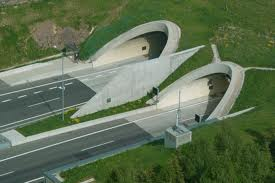
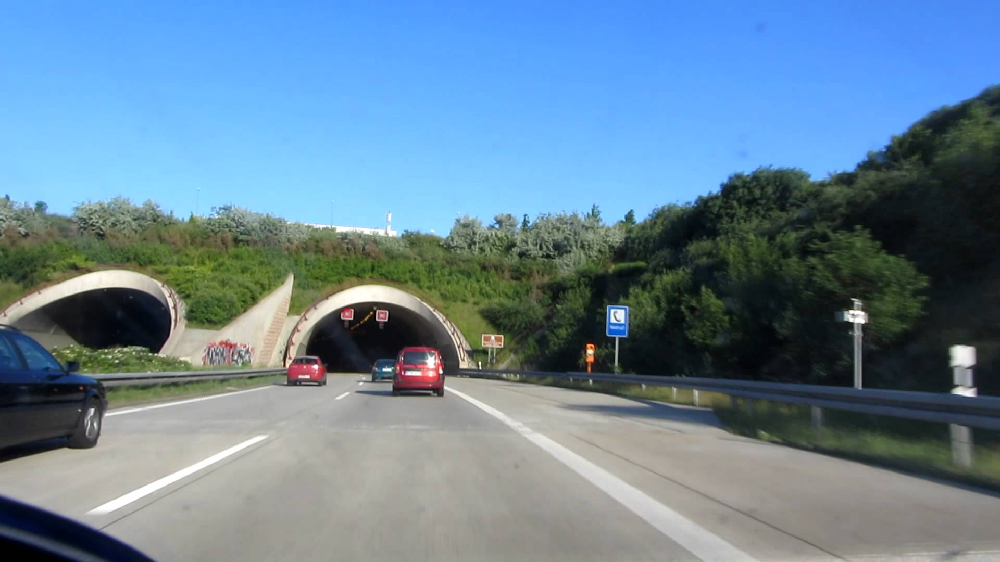

Opis dogodka:
Pri požarih vozil v dvocevnih predorih, se pojavlja težavnost predvsem pri pristopu do kraja požara. Če govorimo o požaru v začetnih fazah ter požarih manjšega števila vozil (eno osebno vozilo, ipd.) se lahko načeloma odločamo, da z vozilom vozimo v cevi, kjer gori ter poskušamo z vozilom in tehniko priti čim bližje in izvesti taktične napade na gorečo vozilo. Če govorimo o požarih večih vozil in večjih razsežnosti (polno razvit požar), se moramo odločiti, da v gorečo predorsko cev ne vstopamo z vozilom, temveč v predorsko cev, kjer gori, dostopamo preko druge cevi in povezovalnih prečnih cevi med obema predoroma. Odvisnost odločitve vodje intervencije o načinu vstopa v predorsko cev je informacija nadzornega centra predora. V nadzornem centru imajo informacije o lokaciji požara, o razsežnosti požara, o številu vozil udeleženih v požaru, itd. Vse odločitve o taktičnih postopkih vodje intervencije, tako izhajajo iz informacije nadzornega centra predora.


Nevarnosti:
Pri požarih v notranjih prostorih so nevarnosti znane, v primerjavi s požarom v predorski cevi, pa se nevarnosti razlikujejo, predvsem v obsegu in hitrosti razvoja požara. V predosrkih ceveh v primerjavi z notranjimi prostori, govorimo namreč o konstantnem dotoku in odvodu zračnih mas. Posledično je razvoj požara hitrejši in požar zelo hitro dosega stopnjo popolnoma razvitega požara. Nevarnosti v povezavi s produkti izgorevanja, se spreminjajo v primerjavi z notranjimi požari v tem, da se dim odvaja v eno smer predora. Dimni produkti se na poti iz predora ohlajajo, kar posledično pomeni, da se evakuacijske poti in poti za dostop v predorsko cev poslabšajo, v smeri gibanja dimnih mas. Načeloma se izvaja prezračevanje cevi v smeri vožnje, saj je v eni fazi prisoten batni učinek zračnega tlaka (zaradi smeri vožnje) ter sama ventilacija v predoru je preko avtomatike vezana na smer vožnje. Težava se pojavi če je požar v predelu predora, kjer je pot v smeri vožnje, krajša do izhoda kot pot proti smeri vožnje. V tem primeru moramo računati, da bomo imeli v smeri evakuacije, nekatere osebe, ki se bodo nahajale na poti proti izhodu ter nekatere osebe, ki bodo ostale v reševalnih nišah. Nevarnosti za posredovalce, predvsem predstavlja daljša pot in temperaturna obremenitev in slaba vidljivost.
Oprema posredovalcev:
Posredovalci se opremljajo kot za klasičen notranji stanovanjski požar. Priporočljivo je da uporabljajo dvojne tlačne posode ter dodatno opremljenost z reševalnim izolirnim dihalnim aparatom ter reševalno masko in termovizijsko kamero (na vsako napadalno skupino ena kamera). Skupine so sestavljene iz treh gasilcev, kar predstavlja optimalno število, ki je sposobna izvesti različne naloge. Število napadalnih skupin je optimalno tri skupine, ki imajo naloge gašenje, reševanje in preiskovanje. V primeru manjšega števila napadalnih skupin, se omejimo na nujne naloge kot so: reševanje oseb in omejevanje požara. Če vstopamo v požar z samo eno napadalno skupino, potem ima ta prioriteto gašenja požara in s tem poskuša zadržati požar v obvladljivih mejah, naslednje skupine pa prevzamejo reševanje oseb.
Prezračevanja:
Sistem v predoru je samodejni, kar pomeni, da po sprožitvi požarnega alarma v predoru, sistem prezračevanja prične s prezračevanjem v smeri vožnje. Ventilacijo je možno iz nadzornega ali pomožnega krmilnega sistema preusmeriti in prekiniti. Vse načine odredi vodja intervencije v dogovoru nadzornim centrom predora.
Gašenje:
Za gašenje se uporabljajo tlačne cevi C (dve ali več napadalnih skupin) ter B tlačni vod (dve ali ena napadalna skupina). Odvisnost izbire cevi in pretokov je odvisna od razmer požara. Napajanje napadalnih skupin se izvaja preko gasilskih vozil z rezervoarjem, napajanje vozil pa se izvaja preko hidrantnih sistemov v predoru. Gašenje neposredno iz hidrantnega sistema predora, se načeloma lahko izvaja, vendar je sistem nezanesljiv zaradi svojih značilnosti (tlak, pretok, zimski čas, oprema hidrantov, ipd.). Izbira gasilnega sredstva je odvisna od gorljive snovi. Lahko se odločamo med gasilno vodo ali penilno snovjo.